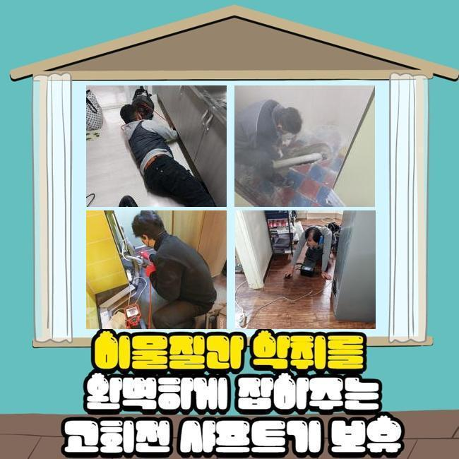
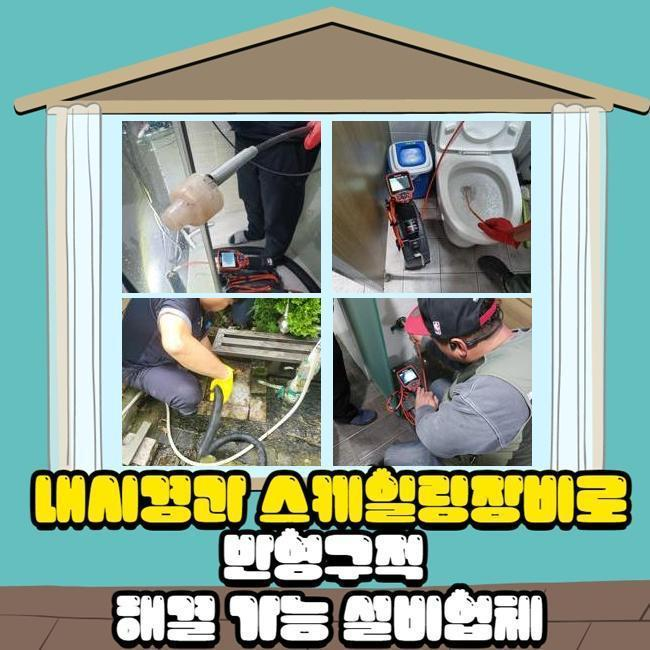
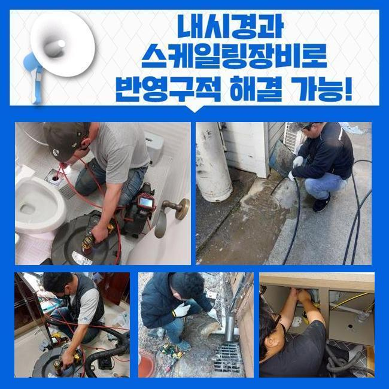
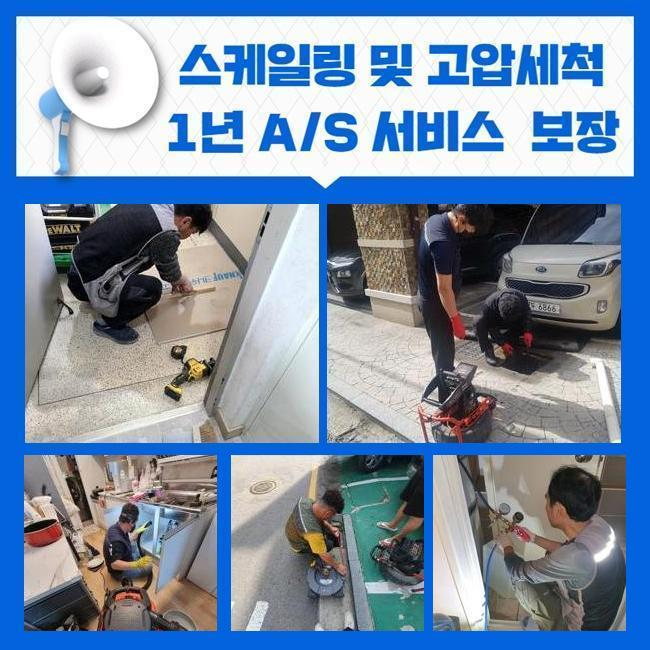
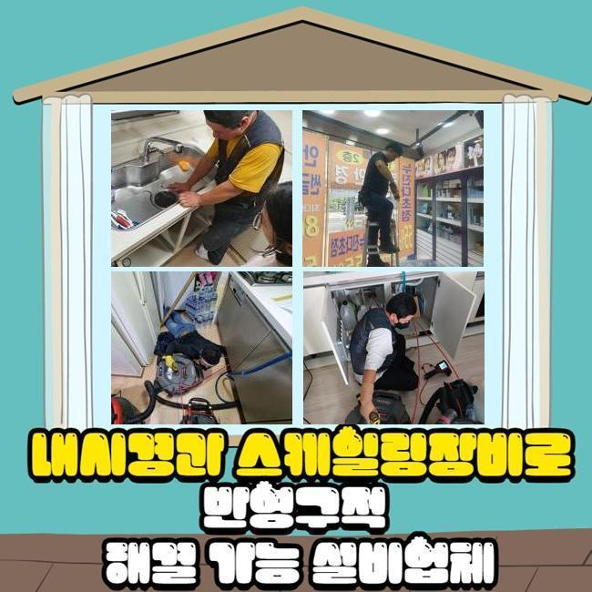
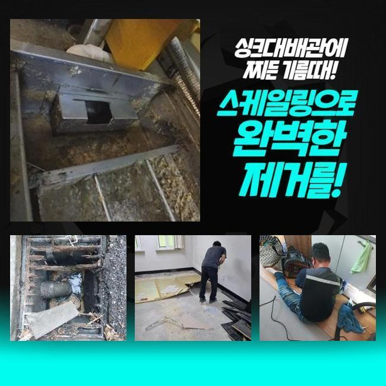
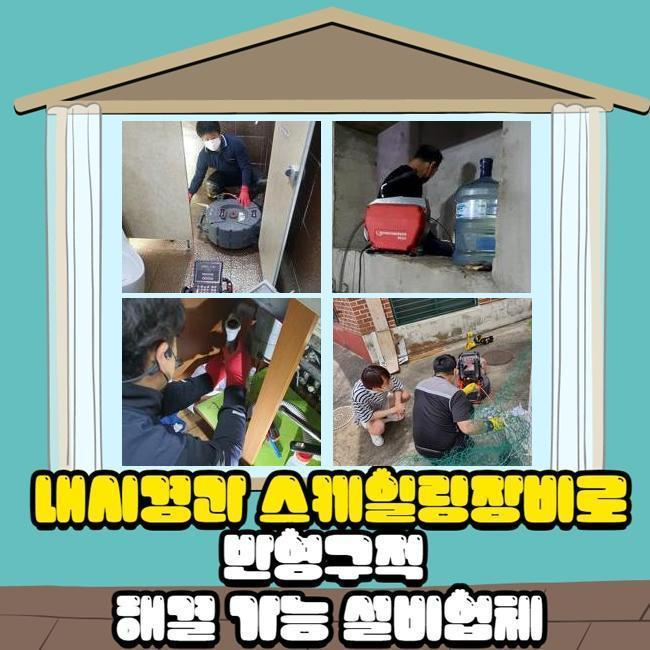

🏠 안양 비산동화장실하수구뚫음 신촌동 악취차단 출장설비
안양 하수구막힘 전문 시공 후기

📋 작업 개요
- 위치: 안양
- 서비스 유형: 하수구막힘, 배관막힘, 집수정막힘, 뚫는업체, 배관청소, 고압세척, 배관보수, 악취차단
- 작업 일시: 2024. 11. 12. 16:19
- 업체명: 하수구수사대 (010-5615-2118)
🔍 문제 상황
안양 비산동화장실하수구뚫음 신촌동 악취차단 출장설비
더운 날씨가 지속되면서 괴로운 하수구 냄새와 막힘으로 스트레스를 앓으시는 분들이 어마어마하게 많아졌습니다
간단하게 나오는 시중의 약제를 구멍에 흘려보내봐도 꽉 막힌 게 풀리지 않아서 답답함을 느끼실텐데요
하수관로의 단순 막힘은 물론 하수구의 악취 유발 현상도 손쉽게 보수를 해드릴 수 있는 지점이니 이 것으로 고생길을 걸으신다면 저희에게 맡겨주세요
건물 안에 내장된 하수관계는 실내의 욕실과 부엌에서 주기적으로 찌꺼기들이나 오물들이 줄을 지어 배출됩니다
하수구 청소를 성실히 하더라도 안쪽에 유입된 미세 입자들이 축적돼서 부피가 커지는데요
세월이 가면 갈수록 상당한 접착력을 보이게 되는데 이게 물이 이동하게 되는 경로가 끊어지게 됩니다
마비된 측면이 늘어나면 도저히 수습이 안되는 막힘 사태로 비화할 수 있어요
배출되는 양상도 부실하게 변하고 고장 사례가 잦아지며 이 상태가 지속된다면 안에 고인 물이 겉으로 튀어나와요
배수로에 접착되어버린 식자재의 잔해나 유분이 썩어서 부패한 냄새를 집안으로 들어가게 합니다
크고 작은 벌레까지 떼로 몰려들기도 해서 스트레스가 이만저만이 아닙니다
이번에 저희에게 전화해주신 고객님은 갑작스러운 하수구 불통으로 사업에도 큰 문제가 발현돼서 적잖이 당황하셨다고 해요

🔎 원인 분석
💡 전문가 진단: 정밀 진단 장비를 사용하여 슬러지의 고착 여부를 판명하고 타격/세척 작업을 실시했습니다.
웬만하면 당장 현장으로 와줄 수 있냐고 위급한 만큼 빠르게 말씀하셨어요
음식을 공급하는 업장이라서 미량의 음식물 쓰레기는 괜찮겠지하는 마음으로 하수관 속에 물이랑 같이 내리고있다 하셨어요
원만하게 활용을 하시다가 불현듯 예고도 없이 물을 트는 하수구와 바닥 배관이 꿈쩍도 하지 않았다고 합니다
불쾌한 냄새도 공기를 떠돌고 요리도 아예 못하다보니 정상영업이 도통 불가능한 사태란 걸 인지하셨다고 해요
단시간 내에 현장으로 이동했고 작업의 기초가 되는 막혀버린 사유부터 판별하려고 시도했습니다
막힘의 원인은 다양한 것을 지적할 수 있기는 한데 특히 음식물을 다루는 장소라면 음식물의 미립자들이 흘러가서 오류를 형성하는 경우가 극히 우세합니다
문제점이 뭔지 정곡을 찔러야하니 내부를 깊이 탐방할 수 있는 첨단 내시경 기기를 상시 활용해서 조사합니다
현장의 막힌 쪽들을 체크하고 제일 효과좋을 방안으로 원활하게 처리하는 역량도 필요하죠
주문받은 음식을 제조하면서 다량의 식용유가 배출되었고 점차 기름때가 뭉쳐서 고착화가 되어서 막힘을 유발한 것이었죠
이미 군집화된 기름때는 물을 부어버린다고 하더라도 뚫릴 낌새도 보이지 않는데 때때로 약제를 부어서 뚫음을 실천하시는 고객님도 다수 계세요
결과물도 좋지 못할 것이고 약간의 희망이 보이더라도 본질적인 극복이 되진 않습니다
파이프라인을 말끔히 세척하는 모터 구동 방식의 샤프트라는 기계를 동원하고 있으며 이로써 쾌적함을 조성하고 있습니다

🔧 작업 과정
시원스럽게 하수가 다시 빠져나가는 걸 생생하게 전달드렸고 당장 장사해도 괜찮겠다며 입이 마르게 칭찬해 주셨습니다
연이어 해결을 해드려야 할 현장이 존재했던 터라 휴식없이 바삐 움직였습니다
상당히 건물 사이즈가 컸던 대규모 식당이었고 특이한 점은 주거지를 변형한 것이었어요
이번 작업 전에도 몇 회 하수관의 불통으로 인하여 업체를 호출해서 처리한 일들이 한두번이 아니었다고 합니다
짧은 시간만 지났을 뿐인데도 재발이 올라와서 업체에 대한 많은 의심을 지니고 계셨어요
막막한 심정으로 온라인에서 공부하시다가 저희를 보석처럼 발견했다고 하셨어요
기존에 처리를 해주던 업체에서는 고압수를 쏴서 더러운 파이프 속 물질들을 다 처리했다고 말했다는데요
실제로 단 며칠 이전에 완전히 고쳐주었는데도 동일한 상황이 터지자 고심끝에 전화를 주신겁니다
하수구 장애가 재차 생겨났다면 더욱 면밀한 단계로 관찰 단계를 밟아가면서 현명하게 다시 스캔을 해주어야 해요
옥외 시설물 뚜껑을 열어서 내외부 각기의 시스템 안에 하수구 검사 기구를 투여해서 진짜 원인을 규명합니다
타겟을 설정해준 이후에 빠른 회전을 토대로하는 기계로 완전히 밀착된 기름막을 삭제할 수 있게 됐어요
이렇게 단계적으로 막힘을 해결할 수 있었고 물이 다시 바깥으로 향하는 현황을 감지할 수 있게 되었습니다
놀랍도록 변모한 파이프의 모습도 관측이 되었고 오염된 부분들이 사라지는 과정을 투명하게 공개하기도 했어요
영업장 쪽의 배관에서만 뚫음 시공을 해드린 것인데 과거도 마찬가지로 이런 청소를 해보셨었음에도 여전히 같은 문제가 탄생된다는 건 다른 원인이 있다고 보여서 외부 집수정까지 놓치지 않고 두루 점검하기로 했습니다
야외 쪽을 살펴보니 보다 심오한 영역에서 오류의 주체를 밝혀냈습니다
작업장소의 스케일이 남달랐기에 정밀한 소형 장비로는 넘을 수 없는 커다란 벽을 실감하시게 될텐데요
넓은 곳에 적용하는 고압세척기를 가지고 있기 때문에 야외 시스템을 정돈하기 위해서는 고압세척을 통한 작업도 보조해야 할 것 같았어요
고객님께 이를 알려드리고 물줄기의 형성을 도와줄 물을 끌어 와서 타겟으로 분사하여 여기저기에 널린 이물질들을 완전하게 정리해드렸어요
생각보다 훨씬 방대한 양의 오염원이 위용을 드러낸지라 보시던 고객분도 놀래셨지만 저도 상당히 충격을 받았습니다
여러 복합적인 수단으로 청소하여 끝내 청정해진 하수가 들어오길래 내시경을 배치해서 작업을 마친 하수구가 회복되었나 살펴보았습니다


✅ 작업 완료
아직 일부 구간에는 석회질이 끼어있어서 석션장치와 샤프트를 병행해서 마감까지 매끄럽게 만들고자 많은 애를 썼습니다
잔해가 전혀 없어야만 되풀이되는 문제에 대한 불안을 가라앉힐 수 있으니 약간은 더 걸리더라도 철저한 품질 관리를 약속드려요
관로의 청사진을 그리거나 배관 촬영기로 안을 찍어서 현황에 대해 제대로 확정짓고 어려운 현장이라고 하더라도 원만한 원상복구를 실시하겠습니다
일반 아파트나 빌라 면학 시설과 같은 모든곳을 폭넓게 시공해 드리오니 하수구 장애가 생긴 곳이 평범치 않다고 해도 전혀 망설이지 마시고 의뢰를 해주시면 된답니다
구구절절 하실 필요없이 간략한 상황만 전달해 주시면 깊이있는 내용은 실제로 가서 구체적인 면면을 판단해서 고쳐서 되돌려 놓겠습니다!




⚠️ 하수구 배관 막힘 예방 및 관리 가이드
- ✅ 머리카락, 비닐, 물티슈 등 물에 분해되지 않는 이물질은 하수구 유입을 절대 금지해 주세요.
- ✅ 하수구 거름망을 씌우고 모여진 이물질은 주기적으로 쓰레기통에 바로 비워주셔야 합니다.
- ✅ 배관 노후가 심할 경우 이물질이 더 쉽게 걸리므로 주기적인 배관 세척(고압세척 등)을 권장합니다.
- ✅ 작업 후 1년 이내 재발 시 하수구수사대에서 무상 A/S 보증 서비스를 제공합니다.
💡 핵심 정리
- 확실한 장비 작업(내시경 점검 및 샤프트 스케일링)으로 원인을 뿌리 뽑습니다.
- 작업 후 1년 이내에 동일한 부위 재발 시 100% 무상 A/S 서비스를 보장합니다.
- 서울 · 경기 · 인천 전 지역에 24시간 언제든 긴급 출동할 수 있도록 항시 대기 중입니다.
❓ 자주 묻는 질문 (FAQ)
🚨 안양 하수구막힘 문제로 고민이신가요?
정확한 원인 진단과 확실한 시공으로 재발 없는 해결을 약속드립니다.
24시간 긴급 출동 | 서울 · 경기 · 인천 전지역 | 1년 내 재발 시 무상 A/S